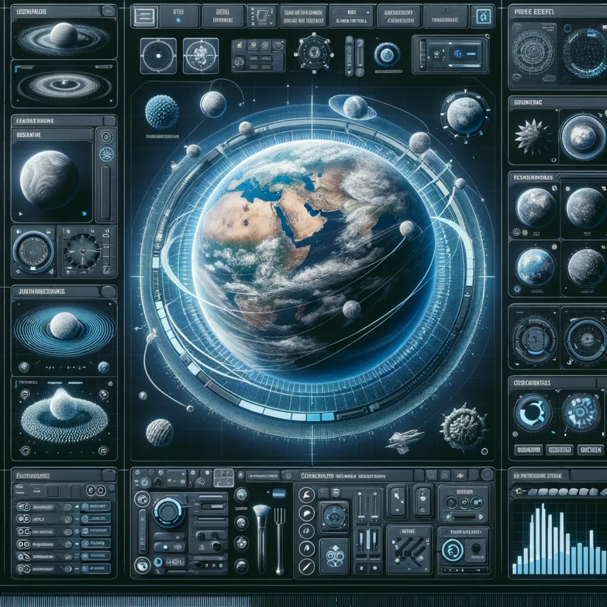
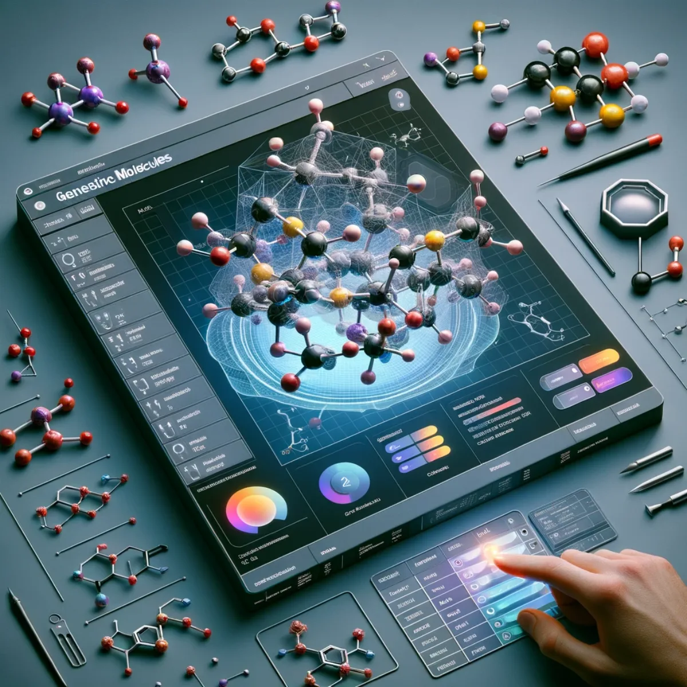

Pathways / Life & living
Generative A.I. Customisation
Nine recommended tool categories, from conversation to molecules: images, video, 3D, scenes, whole worlds, music and more, made to order.

Converse with the future
Large Language Model GPTs
Dive into the realm of articulate machines with our recommended Large Language Model GPTs. These AI-powered maestros offer conversational brilliance, transforming the way we interact with data and knowledge. Experience the pinnacle of natural language understanding and unleash the potential of generative dialogue systems.
Code crafted to perfection
Code Assistant GPTs
Elevate your coding experience with Code Assistant GPTs. Streamline your development process with AI that understands the syntax and soul of your software. From bug fixes to building new features, these intelligent assistants are your coding companion, ensuring efficiency and innovation in every line.

Visualise creativity unleashed
Generative Images
Immerse yourself in the artistry of Generative Images. AI becomes your brush, canvas and palette, offering endless possibilities to create and customise. Whether for graphic design or digital art, these tools transform imagination into visual masterpieces with a mere click.
Directing the digital dreamscape
Generative Videos
Step into the director's chair with Generative Videos. Craft stunning visuals and narratives powered by AI, with tools that bring fluidity to your storytelling. Edit, enhance, and explore the horizons of video creation, where every frame is a fusion of technology and artistry.

Sculpting the virtual vertex
Generative 3D Objects
Shape the unseen with Generative 3D Objects. Our recommended tools give form to your ideas, rendering them in the digital space. Design, modify and materialise your concepts with precision and ease. This is the new dimension of creation, where your visions gain volume and vitality.

Craft your reality: imagine, generate, immerse
Generative Scenes
Step into the director's chair of virtual landscapes with our Generative Scenes interface. Here, your creative impulses meet the cutting edge of AI technology, enabling you to conjure up lush forests, serene lakes, or even the surreal terrains of distant planets. Adjust, morph and fine-tune your environments down to the last leaf or pebble.

Galactic canvas: design worlds beyond imagination
Generative Worlds
Unlock the power to create entire universes with Generative Worlds. This sophisticated control dashboard offers you the tools to sculpt planets and craft ecosystems, fine-tuning everything from mountain ranges to weather patterns. Become a cosmic architect and watch as your world comes to life. See it fully realised in World Builder.

Orchestrate the digital beat
Generative Music & Sounds
Compose the soundtrack of the future with Generative Music & Sounds. Merge art and algorithm by orchestrating a unique soundscape with virtual instruments and audio mixers, designed for musicians, sound engineers, and complete novices alike. Hear it in practice on Music Creation, or listen to Luke's own GenAI music as I C. Infinity on YouTube.

Molecular mastery
Generative Molecules
Dive into the atomic level with Generative Molecules, where you can model and manipulate the building blocks of matter. This digital chemistry set brings the thrill of discovery to educators, students and researchers: craft complex organic structures, visualise molecular interactions, and explore the vast universe within atoms.
Keep exploring